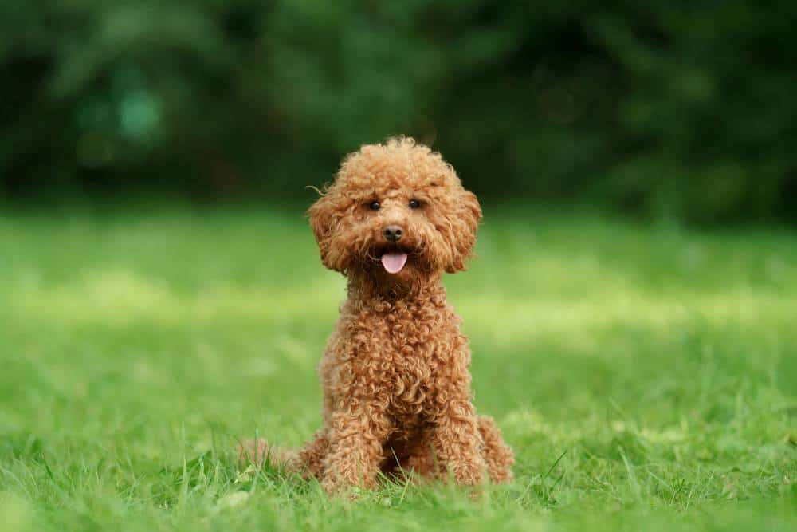

Poddle
Weight: 12-19kg
Poodles are born with their puppy coat. Often, this coat will look and feel much different than the future adult coat.
For Miniature & Toy Poodles, beginning at approximately 9 months old, a Poodle's coat will steadily change over to their adult coat. This process usually takes about 9 months. Therefore, when a Poodle is approximately 18 months old, they will have their full adult coat. In some cases it will be 24 months until the adult coat comes in.
During this time, the coat can become very matted. Large mats (tangles) can ruin a coat, often needing to be clipped off if they cannot be worked out by hand.
For this reason, it is important to brush the coat with a pin brush very often and thoroughly during this stage. Once this change over is complete, the coat will be easier to maintain.